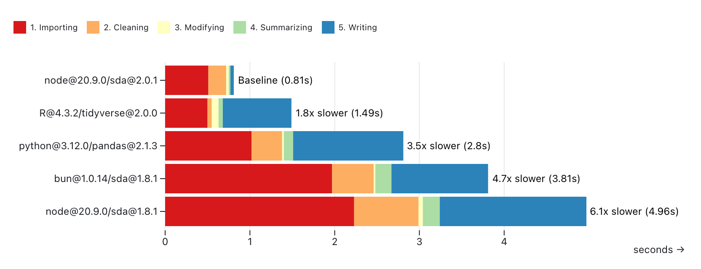
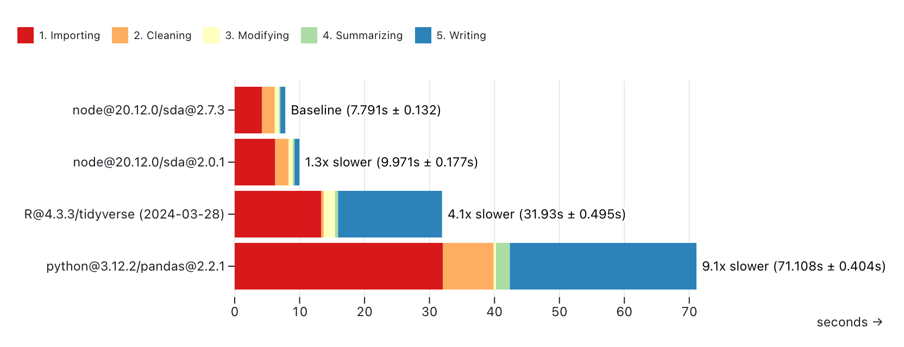
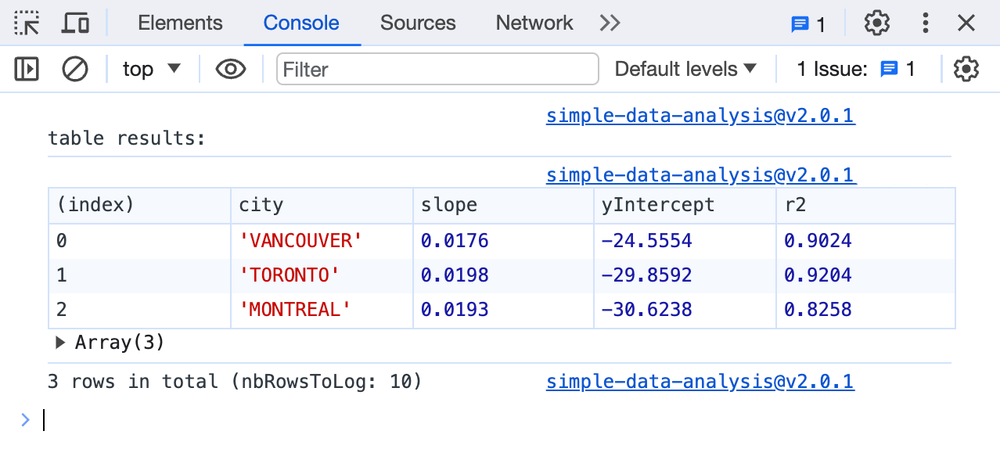
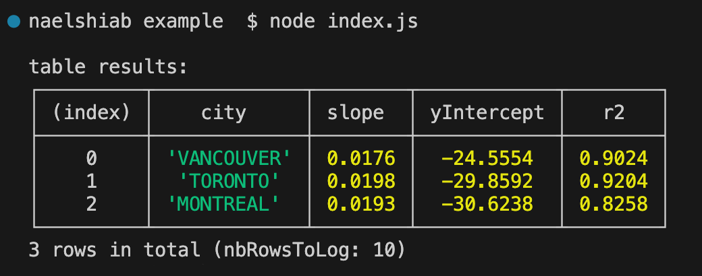

This repository is maintained by Nael Shiab, computational journalist and senior data producer for CBC News.
To install with NPM:
npm i simple-data-analysis
The documentation is available here.
These project's goals are:
To offer a high-performance and convenient solution in JavaScript for data analysis. It's based on DuckDB and inspired by Pandas (Python) and the Tidyverse (R).
To standardize and accelerate frontend/backend workflows with a simple-to-use library working both in the browser and with NodeJS (and similar runtimes).
To ease the way for non-coders (especially journalists and web developers) into the beautiful world of data analysis and data visualization in JavaScript.
SDA is based on duckdb-node and duckdb-wasm. DuckDB is a high-performance analytical database system. Under the hood, SDA sends SQL queries to be executed by DuckDB. You also have the flexibility of writing your own queries if you want to.
Feel free to start a conversation or open an issue. Check how you can contribute.
Because v1.x.x versions weren't based on DuckDB, v2.0.1 is a complete rewrite of the library with many breaking changes.
To test and compare the performance of simple-data-analysis@2.0.1, we calculated the average temperature per decade and city with the daily temperatures from the Adjusted and Homogenized Canadian Climate Data. See this repository for the code.
We ran the same calculations with simple-data-analysis@1.8.1 (both NodeJS and Bun), Pandas (Python), and the Tidyverse (R).
In each script, we:
Each script has been run ten times on a MacBook Pro (Apple M1 Pro / 16 GB), and the durations have been averaged.
The charts displayed below come from this Observable notebook.
With ahccd-samples.csv:
As we can see, simple-data-analysis@1.8.1 was the slowest, but simple-data-analysis@2.0.1 is now the fastest.

With ahccd.csv:
The file was too big for simple-data-analysis@1.8.1, so it's not included here.
Again, simple-data-analysis@2.0.1 is now the fastest option.

Note that DuckDB, which powers SDA, can also be used with Python and R.
If you want to add the library directly to your webpage, you can use the minified bundle from a npm-based CDN like jsDelivr.
Here's some code that you can copy an paste into an HTML file.
<script type="module">
// We load the library, which will available as the variable sda.
import "https://cdn.jsdelivr.net/npm/simple-data-analysis@latest";
async function main() {
// We start a new instance of SimpleDB
const sdb = new sda.SimpleDB();
// We load daily temperatures for three cities.
// We put the data in the table dailyTemperatures.
await sdb.loadData(
"dailyTemperatures",
"https://raw.githubusercontent.com/nshiab/simple-data-analysis/main/test/data/files/dailyTemperatures.csv"
);
// We compute the decade from each date
// and put the result in the decade column.
// The calculations are written in SQL,
// but you can also use updateWithJS to
// use JavaScript.
await sdb.addColumn(
"dailyTemperatures",
"decade",
"integer",
"FLOOR(YEAR(time)/10)*10"
);
// We summarize the data by computing
// the average dailyTemperature
// per decade and per city.
await sdb.summarize("dailyTemperatures", {
values: "t",
categories: ["decade", "id"],
summaries: "mean",
});
// We run linear regressions
// to check for trends.
await sdb.linearRegressions("dailyTemperatures", {
x: "decade",
y: "mean",
categories: "id",
decimals: 4,
});
// The dailyTemperature table does not have
// the name of the cities, just the ids.
// We load another file with the names
// in the table cities.
await sdb.loadData(
"cities",
"https://raw.githubusercontent.com/nshiab/simple-data-analysis/main/test/data/files/cities.csv"
);
// We join the two tables based
// on the ids and put the joined rows
// in the table results.
await sdb.join("dailyTemperatures", "cities", "id", "left", "results");
// We select the columns of interest
// in the table results.
await sdb.selectColumns("results", ["city", "slope", "yIntercept", "r2"]);
// We log the results table.
await sdb.logTable("results");
// We store the data in a variable.
const results = await sdb.getData("results")
}
main();
</script>
And here's the table you'll see in your browser's console tab.

First, ensure that you have NodeJS v20 or higher installed.
Then you'll need to run this command to install the library in your code repository.
npm install simple-data-analysis
And here's an example with React and TypeScript.
import { useEffect, useState } from "react"
// We import the SimpleDB class.
import { SimpleDB } from "simple-data-analysis"
const Main = () => {
// A state to store the results.
const [results, setResults] = useState<
{ [key: string]: string | number | boolean | Date | null }[] | null
>(null)
// You can use sda inside a useEffect.
useEffect(() => {
// Because SimpleDB uses promises,
// we need to declare an async function
// in the useEffect hook.
async function sdaMagic() {
// We start a new instance of SimpleDB.
const sdb = new SimpleDB()
// We load daily temperatures for three cities.
// We put the data in the table dailyTemperatures.
await sdb.loadData(
"dailyTemperatures",
"https://raw.githubusercontent.com/nshiab/simple-data-analysis/main/test/data/files/dailyTemperatures.csv"
)
// We compute the decade from each date
// and put the result in the decade column.
// The calculations are written in SQL,
// but you can also use updateWithJS to
// use JavaScript.
await sdb.addColumn(
"dailyTemperatures",
"decade",
"integer",
"FLOOR(YEAR(time)/10)*10"
)
// We summarize the data by computing
// the average dailyTemperature
// per decade and per city.
await sdb.summarize("dailyTemperatures", {
values: "t",
categories: ["decade", "id"],
summaries: "mean",
})
// We run linear regressions
// to check for trends.
await sdb.linearRegressions("dailyTemperatures", {
x: "decade",
y: "mean",
categories: "id",
decimals: 4,
})
// The dailyTemperature table does not have
// the name of the cities, just the ids.
// We load another file with the names
// in the table cities.
await sdb.loadData(
"cities",
"https://raw.githubusercontent.com/nshiab/simple-data-analysis/main/test/data/files/cities.csv"
)
// We join the two tables based
// on the ids and put the joined rows
// in the table results.
await sdb.join(
"dailyTemperatures",
"cities",
"id",
"left",
"results"
)
// We select the columns of interest
// in the table results.
await sdb.selectColumns("results", [
"city",
"slope",
"yIntercept",
"r2",
])
// We log the results table.
await sdb.logTable("results")
// We can store the results in our state.
setResults(await sdb.getData("results"))
}
// We call the async function inside the useEffect hook.
sdaMagic()
}, [])
return (
<div>
<p>Check the console!</p>
<p>Here are the computed results:</p>
<p>{JSON.stringify(results, null, " ")}</p>
</div>
)
}
First, ensure that you have NodeJS v20 or higher installed.
Then you'll need to run this command to install the library in your code repository.
npm install simple-data-analysis
A package.json file should have been created. Open it and add or change the type to "module".
{
"type": "module",
"dependencies": {
"simple-data-analysis": "^2.0.1"
}
}
Here's some code you can copy and paste into a JavaScript file. It's the same as the one you would run in a browser, except we use the SimpleNodeDB class.
This class has more methods available to load data from local files and write data to files.
import { SimpleNodeDB } from "simple-data-analysis"
async function main() {
// We start a new instance of SimpleNodeDB
const sdb = new SimpleNodeDB()
// We load daily temperatures for three cities.
// We put the data in the table dailyTemperatures.
await sdb.loadData(
"dailyTemperatures",
"https://raw.githubusercontent.com/nshiab/simple-data-analysis/main/test/data/files/dailyTemperatures.csv"
)
// We compute the decade from each date
// and put the result in the decade column.
// The calculations are written in SQL,
// but you can also use updateWithJS to
// use JavaScript.
await sdb.addColumn(
"dailyTemperatures",
"decade",
"integer",
"FLOOR(YEAR(time)/10)*10"
)
// We summarize the data by computing
// the average dailyTemperature
// per decade and per city.
await sdb.summarize("dailyTemperatures", {
values: "t",
categories: ["decade", "id"],
summaries: "mean",
})
// We run linear regressions
// to check for trends.
await sdb.linearRegressions("dailyTemperatures", {
x: "decade",
y: "mean",
categories: "id",
decimals: 4,
})
// The dailyTemperature table does not have
// the name of the cities, just the ids.
// We load another file with the names
// in the table cities.
await sdb.loadData(
"cities",
"https://raw.githubusercontent.com/nshiab/simple-data-analysis/main/test/data/files/cities.csv"
)
// We join the two tables based
// on the ids and put the joined rows
// in the table results.
await sdb.join("dailyTemperatures", "cities", "id", "left", "results")
// We select the columns of interest
// in the table results.
await sdb.selectColumns("results", ["city", "slope", "yIntercept", "r2"])
// We log the results table.
await sdb.logTable("results")
// We store the data in a variable.
const results = await sdb.getData("results")
}
main()
Here's the command to run the file. Change index.js to your actual file.
node index.js
And here's what you should see in your console.

Generated using TypeDoc